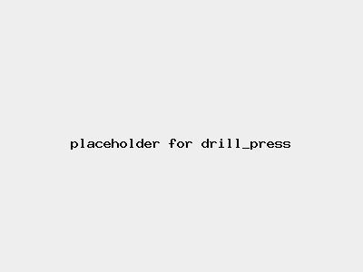

Risk Assessment / drill press
Medium Risk
| Risk Assessment / drill press | Level 2 Medium Risk |
|  |
|
|
| Before | During | After |
|---|---|---|
|
|
|
| Hazard | Persons | Before Controls | Controls | After Controls | ||||
|---|---|---|---|---|---|---|---|---|
| Severity | Likelihood | Risk | Severity | Likelihood | Risk | |||
| Entanglement in moving machinery | Operator | Level 2 Significant injury | Level 2 Unlikely | Level 2 Medium |
| Level 2 Significant injury | Level 1 Very unlikely | Level 1 Low |
| Burns | Current and next operator | Level 2 Significant injury | Level 2 Unlikely | Level 2 Medium |
| Level 1 Minor injury | Level 1 Very unlikely | Level 1 Low |
| Fire | People in the vicinity | Level 2 Significant injury | Level 1 Very unlikely | Level 1 Low |
| Level 1 Minor injury | Level 1 Very unlikely | Level 1 Low |
| Ejected material or broken bits in eyes | Operator | Level 3 Serious injury | Level 2 Unlikely | Level 2 Medium |
| Level 1 Minor injury | Level 1 Very unlikely | Level 1 Low |
| cut from spinning workpiece | Operator | Level 2 Significant injury | Level 1 Very unlikely | Level 1 Low |
| Level 2 Significant injury | Level 1 Very unlikely | Level 1 Low |